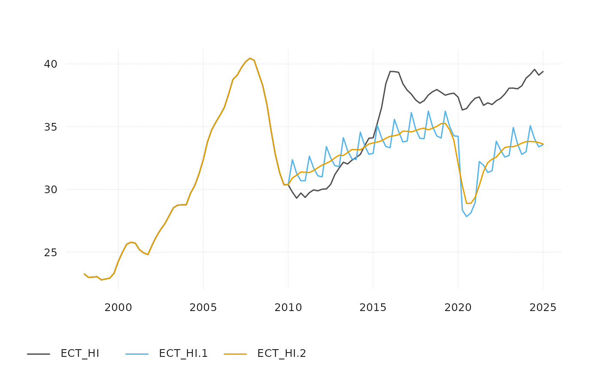

Extend a series using year over year growth
yoy_to_lev.RdExtend a series using year over year growth
Arguments
- yoy_gr
ts-boxable object containing year over year growth rates
- hist_lev
ts-boxable object containing the history in levels for forecast and at least one year of history (in percent)
- smooth_span
extent of smoothing between 0-1 (default: 0, no smoothing). Effect depends on the length of the time series. Low smooth_span value may trigger warning, if time series too short.
Details
This function only works for univariate time series and requires that the growth rates are available for at least the last year of history. Year-over-year growth rates propagate the fluctuations of the base period into the extension period. This can be mitigated by smoothing the extension. The inputs should not contain missing values.
Examples
gr <- quarterly_data_example |>
tsbox::ts_long() |>
dplyr::filter(id == "E_NF_HI") |>
tsbox::ts_pcy()
lev <- quarterly_data_example |>
tsbox::ts_long() |>
dplyr::filter(id == "ECT_HI")
res1 <- yoy_to_lev(gr, lev |> dplyr::filter(time <= "2010-01-01"))
res2 <- yoy_to_lev(gr, lev |> dplyr::filter(time <= "2010-01-01"), 1/8)
tsbox::ts_plot(lev, res1, res2)
